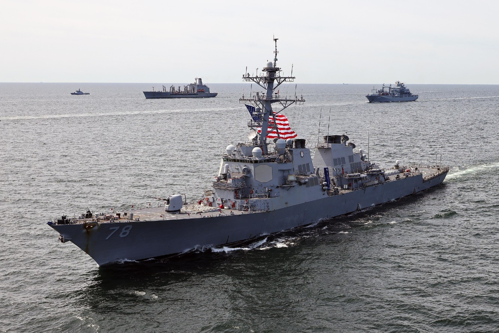
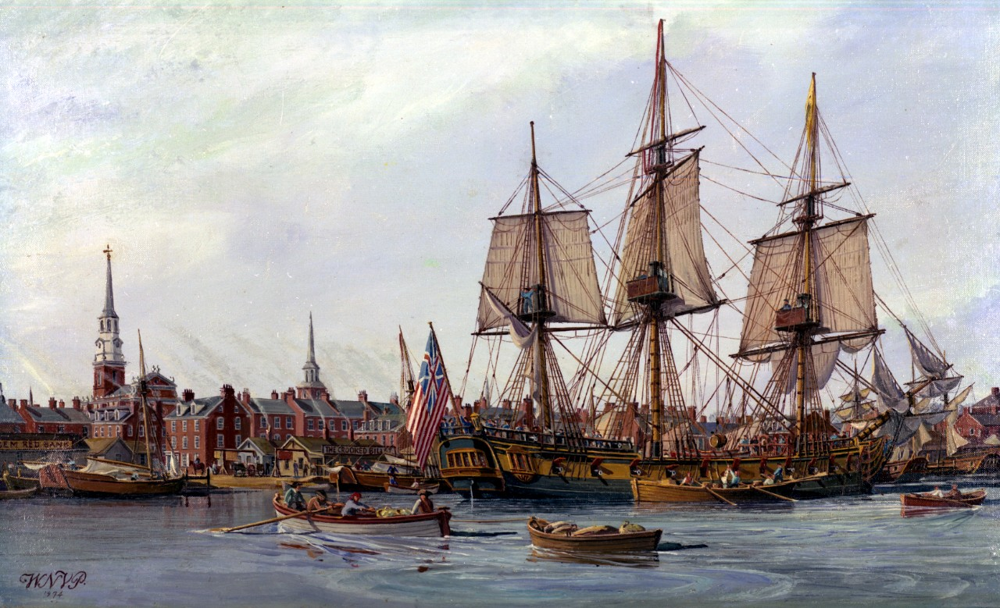

Description

The Navy, naval force, or maritime force is the branch of a nation's armed forces principally designated for naval and amphibious warfare; namely, lake-borne, riverine, littoral, or ocean-borne combat operations and related functions.
Description
The Navy, naval force, or maritime force is the branch of a nation's armed forces principally designated for naval and amphibious warfare; namely, lake-borne, riverine, littoral, or ocean-borne combat operations and related functions.
History

The United States Navy claims October 13, 1775 as the date of its official establishment, when the Second Continental Congress passed a resolution creating the Continental Navy. At the end of the Revolutionary War, this Continental Navy was disbanded.
In 1882, the U.S. Navy consisted of many outdated ship designs. Over the next decade, Congress approved building multiple modern steel-hulled armored cruisers and battleships, and by around the start of the 20th century had moved from twelfth place in 1870 to fifth place in terms of numbers of ships. After World War II ended, the U.S. Navy entered the 45 year long Cold War and participated in the Korean War, the Vietnam War, the First Persian Gulf War, and the Second Persian Gulf War / Iraq War. Following the collapse of the Soviet Union in 1990-91, the Soviet Red Navy fell apart, which made the United States the world's undisputed naval superpower.
Careers
The following jobs include officer and enlisted options:
- Arts & Communications
- Aviation
- Business, Logistics, and Communications
- Electronics & Technology
- Medical
- Science & Engineering
- And many more
Click here to explore more.